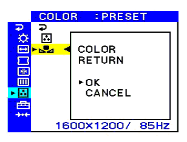

Proprietary to General Electric
Direction 5224328-800, Rev# 5
Dir 5224328-800 LightSpeed 5.X HP60 Limited Access Service
Methods - Adv.
Proprietary to General Electric |
Several common monitor faults are listed below. Most of these can be corrected by making the appropriate adjustments using the controls on the front of the monitor .
If the screen is completely black, check for the following:
The monitor is plugged into power (both ends of the cord are connected) and switched on (at the power distribution box).
The signal cable is connected to the graphics card on the HP computer.
The user has not turned down the brightness overnight, or that a screen-saver utility has not cut the video.
Turn the brightness to maximum. Look for the screen to turn grey and the appearance of the retrace lines. If these are present, the problem lies either in the input circuitry of the monitor, the video cable, or the graphics card in the HP. If swapping the cable to the other monitor gives you an image, replace the monitor. If not, exchange the cable and retry. If the cable is good, change the PC.
If turning the brightness to maximum has no effect, and the power indicator on the front of the monitor is glowing, it is likely that a fault in the monitor circuitry has caused the power supply circuitry to “crow-bar” or shut itself off internally. Replace the monitor.
If the screen is grey, blue, green, or teal when brightness increased, it indicates that the monitor is displaying the raster pattern correctly; and the power supply, high voltage, horizontal and vertical circuitry are working correctly. Check the cabling to the graphics board in the HP. If that is functional, change the HP computer.
If the image is squashed vertically, identify the “vertical size” adjustment control on the front of the monitor, and use it to attempt to restore the image to full size. If you are unable to restore the vertical output to full size, replace the monitor. After adjusting vertical size, check the vertical linearity.
If the image is reduced to a single horizontal line, it indicates that the vertical output has gone entirely. Adjusting the “vertical size” will not have any effect. You will need to replace the monitor.
If the image is squashed horizontally, identify the “horizontal size” adjustment control on the front of the monitor, and use it to attempt to restore the image to full size. If you are unable to restore the horizontal output to full size, replace the monitor. After adjusting horizontal size, check the horizontal linearity.
If the image is reduced to a single vertical line, it indicates that the horizontal output has gone entirely. You will need to replace the monitor.
The “tearing” of the image horizontally is caused by degradation of the filter capacitors in the monitor power supply. As they break down, they generate noise and cause this problem. Adjustment of the “horizontal sync” control might provide some relief, but it may only give a temporary solution and the problem may recur; Replace the monitor.
If retrace lines are visible, adjusting the brightness and contrast controls usually fixes this problem. However, if it persists and no combination of these adjustments gives satisfactory results, then replace the monitor.
If the picture rolls vertically, it indicates that either the monitor is failing to “lock on” to the vertical sync signal from the graphics card in the HP, or the wrong monitor is installed. If the horizontal sync is achieved, it indicates that the graphics card is working. Try adjusting the “vertical hold” control located on the front of the monitor. If you are unable to achieve sync, substitute another monitor to check the graphic card in the computer. If the new monitor displays properly, replace the original monitor. If the substitute monitor exhibits the same fault, check the video cable by swapping it with another monitor cable. If it works, replace the HP computer.
The variation of the Test Pattern Square Size from top to bottom is also known as vertical non-linearity. Locate and adjust the “vertical linearity” adjustment control on the front of the monitor until all squares are the same size. If this fails, replace the monitor.
Sideways, the horizontal non-linearity looks the same as vertical non-linearity. Locate and adjust the “horizontal linearity” control on the front of the monitor.
Color changes across or down the screen. If the screen changes colors - particularly from top to bottom, one reason could be a stray magnetic field from components placed near the monitor or underneath the monitor, especially units that generate or use high voltage. A common cause of this problem is that components that emit high EMF have been placed too close to the monitor. Try moving the monitor or find the EMF source. If this does not fix the problem, replace the monitor(s).
| NOTE: | If you are experiencing a high background luminance, please refer to instruction below. |
The colors of most display monitors tend to gradually lose brilliance over several years of service. The COLOR RETURN feature, found in the PRESET, VARIABLE, and sRGB modes allows you to restore the color to the original factory quality levels.
Press or select on OK to restore the color (see Illustration 1) .
The picture disappears while the color is being restored (about 2 seconds). After the color is restored, the picture reappears on the screen again.
| NOTE: | If AVAILABLE AFTER WARM UP appears on the screen, see Troubleshooting in your user manual. |
| NOTE: | The monitor may gradually lose its ability to perform this function due to the natural aging of the picture tube |
Illustration 1: Color Preset
